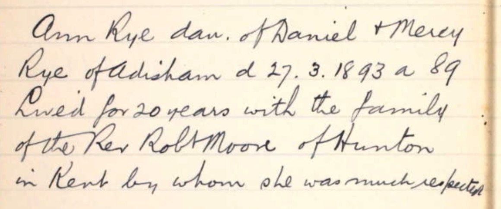
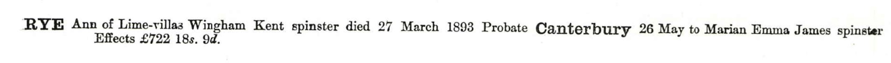
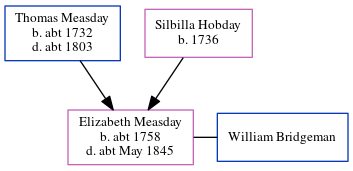

Ann Rye c1804 - 1893
[ Home ] | [ Calendar ] | [ Surnames Index ] | [ Errors ] | [ Family History ]The child of Daniel Rye and Mercy Measday, Ann Rye, the first cousin five-times-removed on the mother's side of Nigel Horne, was born in Adisham, Kent, England c. 18041,2,3 and baptised there at Holy Innocents' Church, The Street on 10 Mar 1805.
During her life, she was living at New Barn Farm, Ickham, Kent, England on 6 Jun 18411; and at Lime Villas, Wingham, Kent in 1893.
She died on 27 Mar 1893 in Adisham2 and was buried there at Holy Innocents' Church, The Street on 30 Mar 1893 (Inscription: "Ann RYE 27 Mar 1893 aged 89 daughter of Daniel and Mercy RYE of Adisham. Lived for 20 years with the; family of Rt. Rev. Robert MOORE of Hunton in Kent.")4.
Parents
- Mercy was born c. 1767
Citations
- 1841 England, Wales & Scotland Census - Findmypast (was age 35)
- England & Wales deaths 1837-2007 - Findmypast
- Kent, Canterbury Archdeaconry Burials - Findmypast
- Kent, Canterbury Archdeaconry Burials - Findmypast
Media
Kent, England, Tyler Index to Parish Registers, 1538-1874 Adisham, Monumental Inscriptions

Ann Rye - Probate

Folkestone Express, Sandgate, Shorncliffe & Hythe Advertiser April 12, 1893

England & Wales deaths 1837-2007 - BMD/D/1893/1/AZ/000335/241
Kent, Canterbury Archdeaconry burials - GBPRS/CANT/D/95219412
1841 England, Wales & Scotland Census - GBC/1841/0013940836
England Births & Baptisms 1538-1975 - R_882692155
Kent Baptisms - GBPRS/CANT/B/96310428
Family Tree
Map
Generated by ged2site. Last updated on Jul 3, 2024
Known Issues
Residence record for 1893 contains no citation